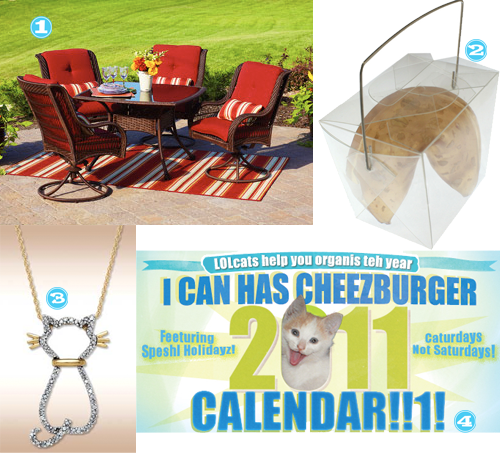

Man o Man does Ben Santa really have my number.  Here’s a few of my favorite items that I raked in this holiday!

- Better Home and Garden Patio Furniture Set – Mimi and PawPaw gave this to both Ben and I. Â I can’t wait to have some friends and family over to enjoy this set. Â It’s fits perfect with my decor.
- Fortune Cookie Soap – these things are too cute. Â They actually all have a paper fortune in there, but are the perfect accent for my guest bathroom.
- Cat Necklace – since I’ve been banned by Ben and the city I believe from obtaining another kittah, Ben got me this. Â I absolutely adore it!
- I CAN HAZ Calendar – this is actually the first year they printed these. Â Looks great on my office wall.
I’ll tell you where I didn’t hit it big and that was the lotto tix in Aus, Ben and my stockings. Â Of all the tickets we scratched we won $2 collectively! Everything else made up for it though.


Recent Comments